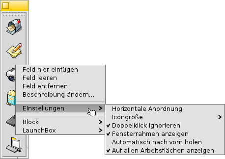

Deutsch
Deutsch Català
Català English
English Español
Español Français
Français Italiano
Italiano Magyar
Magyar Polski
Polski Português
Português Português (Brazil)
Português (Brazil) Română
Română Slovenčina
Slovenčina Suomi
Suomi Svenska
Svenska 中文 ［中文］
中文 ［中文］ Русский
Русский Українська
Українська 日本語
日本語LaunchBox
| Deskbar: | ||
| Ort: | /boot/system/apps/LaunchBox | |
| Einstellungen: | ~/config/settings/LaunchBox/* |
Um schnell auf seine Lieblingsanwendungen zugreifen zu können, kann eine oder mehrere LaunchBoxen gestartet werden. Sie können so eingestellt werden, dass sie entweder nur auf dem aktuellen oder allen Workspaces erscheinen. Sie lassen sich auch zum schnellen Öffnen eines Dokuments in einer bestimmten Anwendung verwenden. So kann man z.B. eine HTML Datei auf einen Texteditor in der LaunchBox fallen lassen, um sie im Editor anstelle des normalerweise bevorzugten Programms, dem Browser, zu öffnen.
Alle Einstellungen sind vom Kontextmenü aus erreichbar:
| Erzeugt ein neues, leeres Iconfeld. | |||
| Leert ein Iconfeld. | |||
| Entfernt ein Iconfeld. | |||
| Schwebt der Mauszeiger über einem Icon, erscheint ein Tooltip mit dessen Dateinamen und, falls es sich um eine Anwendung handelt, dessen Kurzbeschreibung falls sich dieser vom Dateinamen unterscheidet (siehe Kapitel Dateitypen). Mit diesem Menüpunkt lässt sich diese Besschreibung für den Tooltip ändern. | |||
Richtet die Iconfelder horizontal aus. Legt die Icongröße von 16 bis 64 Pixel fest. Started das verlinkte Objekt nur einmal, auch wenn man (unabsichtlich) doppelklickt. Blendet den Fensterrahmen ein. Die Launchbox spingt in den Vordergrund, sobald der Mauszeiger in die Nähe des Bildschirmrands kommt. Zeigt die LaunchBox auf allen Workspaces. | |||
Erzeugt eine weitere LaunchBox. Dupliziert die aktuelle LaunchBox. Schließt die aktuelle LaunchBox. | |||
Schließt alle LaunchBoxen. |